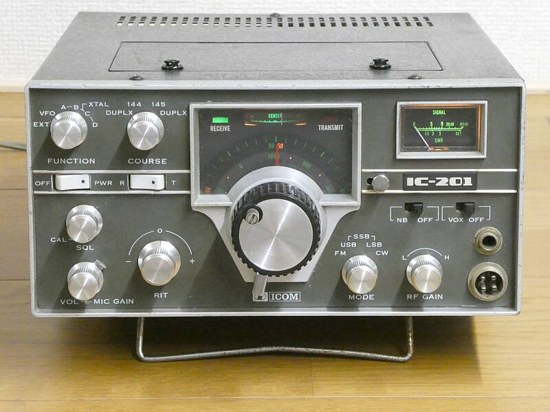
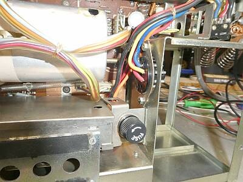
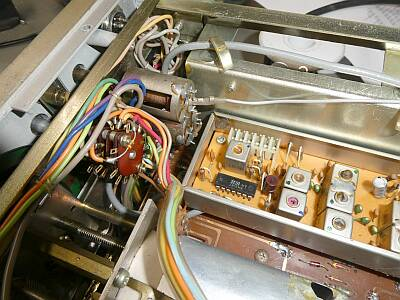
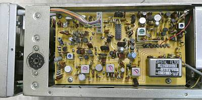
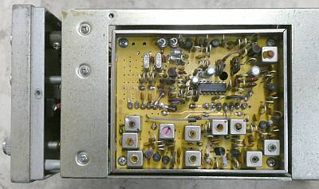
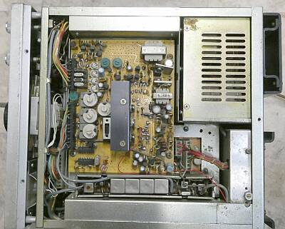
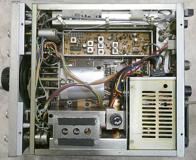
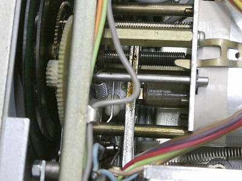
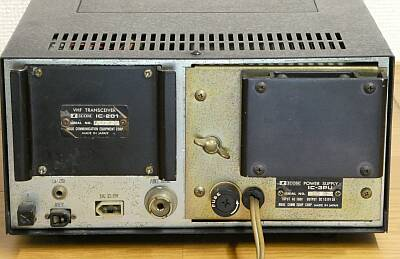

| ＩＮＯＵＥ ＩＣＯＭ ＩＣ-２０１ |
 |
井上電機製作所（現ＩＣＯＭ）より発売になった、１４４MHz帯１０Wのオール・モード・トランシーバです
１９７４年に発売されたもの
同じデザインで、やや先輩にＦＭ専用機 ＩＣ-２１０ がありました
こちらは、５０ＭＨｚ帯の ＩＣ-７１ の１４４ＭＨｚ帯モデルです
本機と同じオール・モードの５０ＭＨｚ帯モデルとしては、ＩＣ-５０１ という製品がありました
周波数読取のダイヤル板は、１KHｚ直読・・・ＲＬ．ＤＲＡＫＥ社の「Ｃシリーズ」に似たような構造です
メインダイヤル下のレバーは、ダイヤルの回転する重さの切替レバーです
電飾が綺麗です |
私から見て特徴的な設計は、以下の2点
受信のアッテネータ Ｍ結合の本格的なものです
チェックしたところ２０ｄB強の減衰が得られました
ＶＦＯは、可変容量ＶＣではなく、コリンズＰＴＯタイプの可変リアクタンス方式が採用されています
井上電機製作所／アイコムとして、アナログＶＦＯで、１ＫＨｚ直読を目指したのは、もしかしたら本機と ＩＣ-５０１ だけかもしれません
次世代の、ＩＣ-５５１/２５１からは、ＩＣ-７１０ 同様にデジタルＶＦＯとなっています
このＰＬＬ技術が、この先の井上電機製作所／アイコム発展の礎になったように思います
お話を戻して、この後１９７７年に井上徳造社長（当時）は、アーサー・コリンズ氏を訪ねていますが、コリンズ製品に見る性能をリスペクトとしていたのかも知れません
この訪問時には、ＩＣ-７０１（国内モデル名は、ＩＣ-７１０）をプレゼントし、アーサー氏からはその製品について、自分が作りたかったものだと、とても高い評価をいただいたそうです
今回入手したものはジャンク・・・ダイヤル照明ランプが点灯するだけで、他はまったく動作しないもので、メカ的な部分も現状で正しいかどうか判断できないものでした
頑張って、稼働させるところまで（とりあえずスペック・データが得られるまで）手を入れてみました |
 |
オプションの電源ユニットＩＣ-３ＰＵを差し込んで接続する部分
ＧＴプラグ（ソケット）が、ある程度自在に動くよう工夫して取り付けられています
こうしておかないと、ＩＣ-３ＰＵの取り付けがシビアになります
古いもので、差し込みヒューズホルダを開けたところ、接点部が破損して、キャップを回しても固定できなくなり、新しいヒューズホルダに交換しました
|
|
 |
Ｍ結合のアッテネータ
窓が開いている部分同士が向かい合った時が最大感度になります
従って写真の状態は、感度を最も絞った状態です
基板ユニットは、送信Mixからドライバ段まで組まれたもの |
 |
ケース・サイド
１ｓｔミキサは、ＦＭ／ＳＳＢ／ＣＷ共通
ＳＳＢ／ＣＷのＩＦ~検波部は、この基板にあります
|
 |
もう一方のケース・サイド
プリMIX部
FM変調部もここにあります（ワイド・ナローの切替ジャンパの用意があります）
|
 |
ケース上蓋を外して内部を写しています
中央の黒い板は、電源部のヒートシンクです
８Ｖのレギュレータ
そしてその８Ｖを送受に合わせて出力する部分です
電源オプション ＩＣ-３ＰＵを内蔵した状態です
その電源ユニットの下に見えるシールドされた部分が送信終段部です
下に見える横に細長いユニットは、受信のTOP RF～１ｓｔMIｘ、１ｓｔＩＦ部です
この頃のアイコムでは、このようにユニット化した構成が多く採用されていました |
 |
ケース下蓋を外して内部を写しています
中央にＶＦＯ
その上は、送信のミキサーからドライブ部
一番下に見えるシールドされた箱になった部分は、ＦＭのＩＦ／検波部です
上写真とこの写真に見える基板の間に、いわばベースとなる基板があるのですが、そこに手を入れるだけの分解は困難です
この点、保守性は悪いと言わざるを得ません
ジャンパ配線しか対応策が無い状況に追い込まれます！ |
 |
こちらが特徴的と思われるＶＦＯ部
中央に太く見えるダストコアが、この写真では左右に動くことで、発振周波数が変化します
いわゆるスラグチューン、μ同調です
このコアの取付位置が正常かどうかわかりませんが、現状で一番近いマーカー（５００ＫＨｚ）で校正して、ダイヤル読取誤差１ＫＨｚ程度です |
 |
リアパネルです
ＦＭ専用機 ＩＣ-２１０ に比べ、送信終段の放熱器、ヒートシンクが小型化されています
パワートランジスタの効率が上がったのか、FM連続送信ほど発熱しない前提か、何でしょうね
終段トランジスタは、このヒートシンクに取り付けらておらず、反対面に取り付いています
電源ユニットは、純正のＩＣ-３ＰＵです
|
|
ジャンク
なかなか大変な対応が必要でした
送受信の切替に使われる８Ｖのラインが、送受それぞれ必要な個所全てにつながっていない・・・どこかで接続が切れている状態でした
基板のスルーホール抜け、基板の半田割れ（クラックが入っている）など、原因はさまざま
それもマザーボードとなっている一番ベースの基板には、簡単にはたどり着けません
ジャンパーで配線を追加するしかない対応もありました
が、特にどこかが特に劣化したというわけではなく、復旧はしました
調整ずれというか、前のオーナーが不用意に触った感はあります
再調整しました
ＶＦＯメカは、固着とまではいっていませんが、スムーズに回るとは言えない状態で、清掃及びグリスアップしました
その結果で、お決まりのスペック・チェックです
送信パワー
１４４．０～１４６．０MHｚの範囲で、１１～１２Ｗ ＩＣ-３ＰＵ使用時
受信感度
ＳＳＢ/ＣＷ ０．２μＶ信号ＯＮ／ＯＦＦで、Ｓ／Ｎ１０ｄｂ（スペックは、０．５μＶ）
ＦＭ ０．４μＶ入力時 １ＫＨｚ３．５ＫＨｚデビエーション ＯＮ／ＯＦＦで、Ｓ／Ｎ２０ｄｂ（スペックは、０．５μＶ）
と、いずれもスペックはクリアしています |
| 2025.11 JA4FUQ |
|